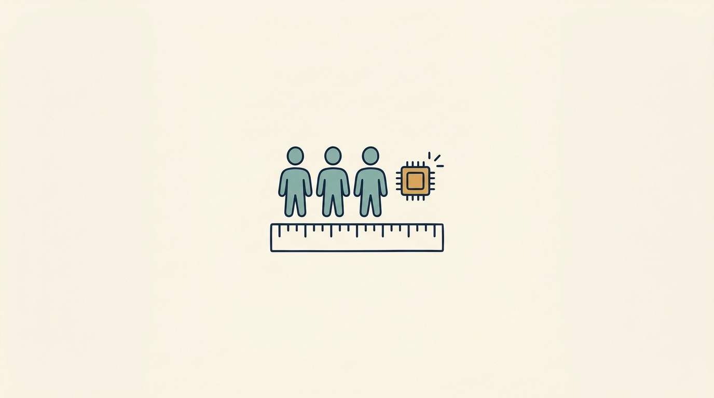

Part V — SCALE: Change the Team, the Systems and the Company Deliberately
Scale the Team With AI: Capacity Claims Need the Same Evidence as Headcount

Image generated by Google Gemini (gemini-3-pro-image-preview)
Part V — SCALE: Change the Team, the Systems and the Company Deliberately

Image generated by Google Gemini (gemini-3-pro-image-preview)